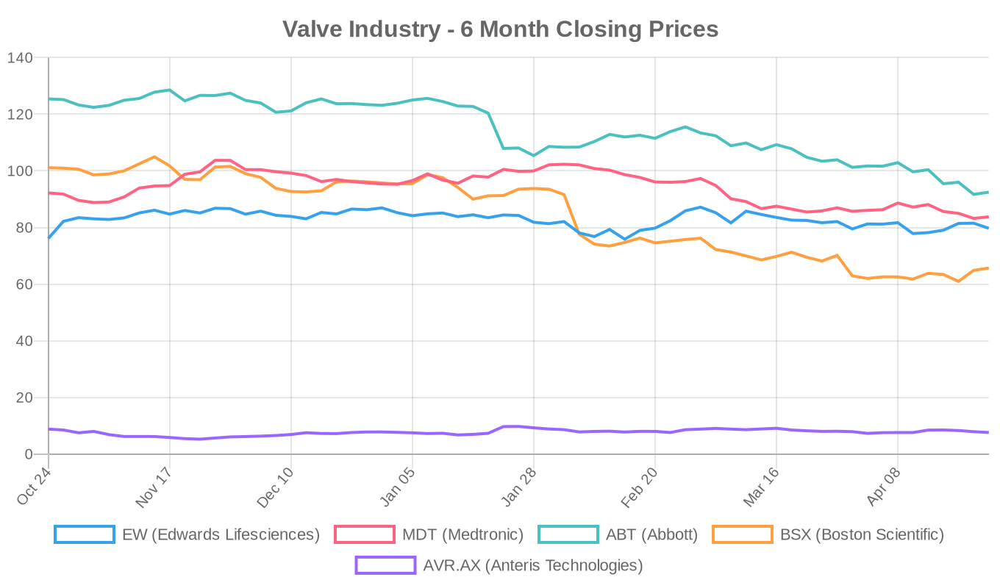
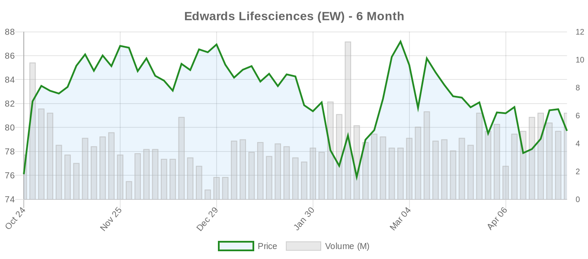
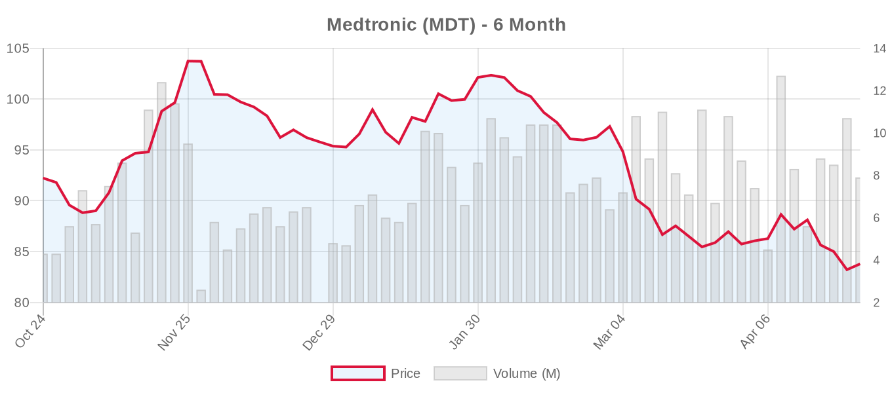
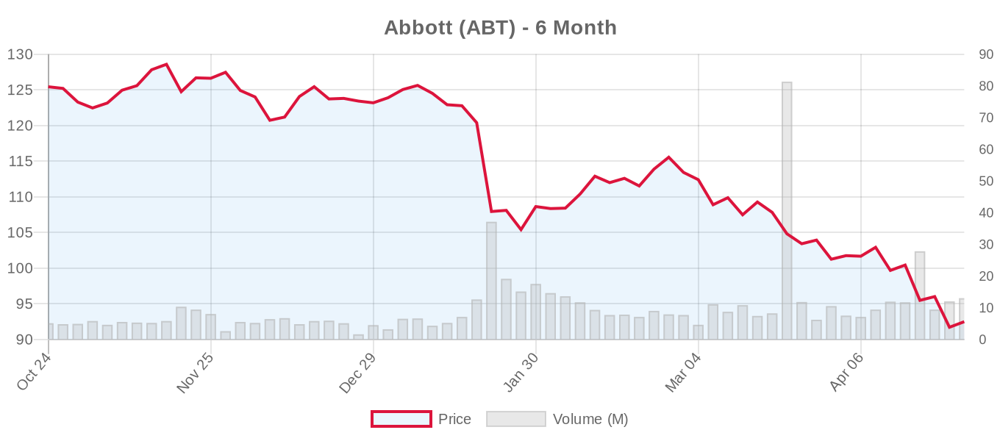
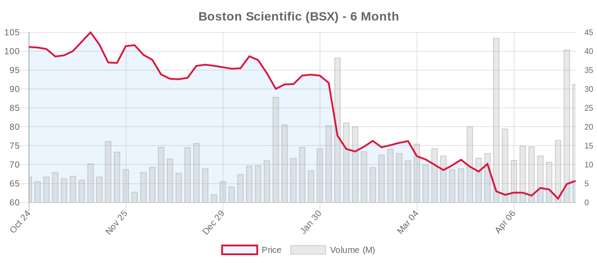

|
||||||||
|
April 24, 2026 By E. Nolan Beckett |
||||||||
|
||||||||
Executive SummaryEdwards Lifesciences delivered a blockbuster Q1 2026 — beating EPS estimates by $0.05, posting 12.7% sales growth to $1.65 billion, and raising full-year guidance — sending analyst price targets upward across Wall Street. Meanwhile, a new meta-analysis of eight randomized trials found that cerebral embolic protection devices during TAVR still show no significant reduction in stroke, and a Circulation: Cardiovascular Interventions study demonstrated starkly inferior durability of bioprosthetic versus mechanical valves in pediatric patients. The cardiology world also mourns Eugene Braunwald, the founding father of modern cardiology, who passed away at 96. Today's digest is dominated by the Edwards earnings story and what it signals about the structural heart market trajectory — but the clinical literature offers important counterweights. The CEPD meta-analysis adds to a growing body of evidence questioning the value proposition of these devices despite widespread adoption, while the pediatric valve durability data from Circulation: Cardiovascular Interventions reinforces a point too often lost in the TAVR enthusiasm: bioprosthetic valves have a shelf life, and for young patients, that remains a serious problem. A single-center report on the Myval THV in bicuspid anatomy adds another small dataset to the BAV-TAVR question, and a provocative WSJ piece highlights the tradeoffs inherent in TAVR's rapid expansion. On the mitral side, a single-center study flags an underappreciated risk — acute hypoxemic respiratory failure post-TEER in patients with concomitant aortic stenosis. Today's Key Findings
Aortic Valve (TAVR/TAVI)Cerebral Embolic Protection Devices: Still No Proven Stroke BenefitGbreel et al. published a meta-analysis of eight RCTs encompassing 11,589 patients in Clinical Cardiology, evaluating cerebral embolic protection devices (CEPDs) during TAVI. The results are sobering for CEPD advocates: no significant difference in overall stroke (RR 0.92, 95% CI 0.75–1.14), no difference in disabling or non-disabling stroke, and no mortality benefit. A transient improvement in cognitive testing (MoCA scores) at 2–5 days disappeared at later follow-up. The Sentinel device showed a non-significant trend toward reduced disabling stroke, but the trial sequential analysis explicitly states that current evidence is insufficient to definitively confirm or refute CEPD efficacy. This is an important finding given the growing adoption of CEPDs in clinical practice — often driven by face validity rather than hard outcomes data. Operators and programs should carefully weigh the added cost and procedural complexity against this evidence gap. Bioprosthetic vs. Mechanical Valves in Pediatric AVR: A Stark Durability Gap[NOTABLE] Yokota et al. in Circulation: Cardiovascular Interventions report on 180 pediatric AVR procedures (median age 14.3 years) performed between 2002 and 2024. The results are striking: freedom from reintervention at 10 years was just 29% for bioprosthetic valves versus 82% for mechanical valves (P<0.001). On propensity-adjusted analysis, bioprosthetic valves carried a hazard ratio of 4.66 for reintervention. Younger age at implantation (<12 years) further compounded the problem (HR 3.26). While this is a pediatric population with accelerated structural valve deterioration due to calcium metabolism and growth, the implications extend to the broader TAVR durability debate. If bioprosthetic valves fail this dramatically in young patients, the question of what happens to TAVR valves in patients aged 50–70 over 15–20 years remains unanswered — a gap both the 2020 ACC/AHA and 2025 ESC guidelines acknowledge. This study reinforces why both guidelines recommend SAVR over TAVR in younger patients, and why the ESC sets the SAVR-preferred threshold at age 70 (ACC/AHA at 65). Myval THV in Bicuspid Aortic Valve: Encouraging but LimitedMagyari et al. report a single-center retrospective series of 52 consecutive BAV patients treated with the Myval balloon-expandable THV, published in Catheterization and Cardiovascular Interventions. At 1 year, there were no significant differences in all-cause mortality (3.9% vs. 10.2%, P=0.185) or stroke (3.9% vs. 2.8%) compared with trileaflet patients. Technical and device success exceeded 95%, with no moderate or severe paravalvular regurgitation in BAV patients. However, several caveats apply: this is a single-center, non-randomized series with modest sample size. The pacemaker rate was notably high at 34% — a concern whether this reflects annular anatomy or device design. Both the 2020 ACC/AHA (Class IIb) and 2025 ESC (Class IIb) guidelines rate TAVI for BAV as having limited evidence. BAV patients were excluded from virtually all major TAVI RCTs, and NOTION 2 showed a numerically higher event rate with TAVI in the BAV subgroup. This study adds modestly to the BAV-TAVR evidence base but does not change the fundamental picture: BAV remains primarily surgical territory, especially in younger patients with favorable operative risk. Conduction Disturbances After TAVR: Two Instructive CasesKesriklioglu et al. in JACC: Case Reports present a compelling case of alternating bundle branch block detected only on Holter monitoring after TAVR, in a patient whose resting ECG had initially normalized. The patient presented with syncope 6 days post-TAVR. A companion editorial by Ayhan and Yakut discusses the broader challenge of post-TAVR conduction management. These cases underscore that a normal post-procedural ECG does not exclude advanced conduction system disease — a clinically relevant point given that new permanent pacemaker implantation after TAVR remains 15–25% depending on valve type, and intermittent high-grade block can be fatal if missed. Extended ambulatory monitoring post-TAVR deserves more systematic implementation. TAVI in Kathmandu: Global Expansion ContinuesAdhikari et al. report the initial 19-patient TAVI experience from Shahid Gangalal National Heart Centre in Nepal, with a 100% procedural success rate and no in-hospital mortality. While these are small numbers, they represent the continued global democratization of TAVI — a trend worth following as emerging economies increasingly adopt transcatheter technologies. The challenge, as always, will be sustaining outcomes as case volumes build and patient selection potentially broadens. TAVR Nursing Education ReviewKinsaul et al. in the American Journal of Nursing describe TAVR as having evolved "from novel to normal" and argue that it is now "the preferred, first-line treatment for patients with AS." Editorial note: This framing overstates the evidence. While TAVR is indeed first-line for patients over 80 or with elevated surgical risk, both the ACC/AHA and ESC guidelines continue to recommend SAVR as the preferred approach for younger, lower-risk patients — below age 65 (ACC/AHA) or 70 (ESC). Characterizing TAVR as universally preferred risks contributing to the indication creep that Bowdish, Badhwar, and others have warned about. Mitral Valve (MitraClip, PASCAL, TMVR)Concomitant AS Predicts Respiratory Failure After M-TEERSonbol et al. in Catheterization and Cardiovascular Interventions report a single-center retrospective study of 238 M-TEER patients, finding that concomitant mild-to-moderate AS was independently associated with acute hypoxemic respiratory failure within 24 hours (16.7% vs. 3.8%, adjusted OR 4.38, 95% CI 1.36–14.61). Importantly, there were no differences in 30-day readmission, heart failure hospitalization, AKI, or in-hospital mortality. The mechanism likely involves acute afterload increase as MR reduction unmasks fixed AS physiology. The authors appropriately flag this as hypothesis-generating given the single-center design and small number of events (n=30 in the AS group). Nevertheless, this has practical implications for procedural planning: patients with coexistent AS undergoing TEER may benefit from closer hemodynamic monitoring and lower thresholds for post-procedural respiratory support. It also raises the question of whether concurrent AS should factor more prominently into M-TEER patient selection — particularly as the ESC 2025 guidelines have elevated TEER for secondary MR to Class I. MitraClip in Local TV CoverageKXII reports on a local patient's MitraClip treatment, reflecting the continued mainstreaming of M-TEER in community awareness. Surgical vs. Transcatheter ComparisonsWSJ: "A Breakthrough Heart Procedure Comes With Risky Tradeoffs"The Wall Street Journal published a feature on the tradeoffs of TAVR's rapid expansion — a piece that aligns with concerns raised in the structural heart surgery literature by Bowdish, Badhwar, Kaul, and others. While the article's full content is behind a paywall, the timing is notable: it arrives on the same day Edwards reports record TAVR growth and raises guidance. The tension between commercial momentum and clinical caution is the central narrative of structural heart disease in 2026. The 2025 ESC guidelines expanded TAVI indications to patients ≥70 with tricuspid aortic valves and suitable anatomy, but for every patient who benefits from broader access, there remains the question of whether patients who would do better with SAVR are being steered toward the catheter lab. Long-term durability data beyond 10 years remain conspicuously absent. Imaging Review: Foundation of Modern Valve TherapyPeer et al. in Therapeutische Umschau provide a comprehensive review of multimodality imaging across the valve therapy spectrum — from TTE for initial diagnosis to cardiac CT for TAVI planning and TEE for intraprocedural guidance. The review emphasizes that imaging is the "foundation of modern, increasingly catheter-based valve therapy" and notes CT's expanding role in tricuspid and mitral transcatheter planning. Device & TechnologyPFO and Migraine: Metabolomic InsightsLuo et al. in iScience present exploratory metabolomic profiling in migraine patients with PFO (n=30 patients, n=17 controls), identifying the gut microbiota-derived metabolite indoleacrylic acid (IA) as inversely associated with migraine severity. In an independent validation cohort (n=220), IA combined with hs-CRP improved discrimination for PFO-associated migraine (AUC 0.722). While this is early-stage, hypothesis-generating work, it contributes to the growing mechanistic understanding of the PFO-migraine connection — potentially relevant for patient selection in PFO closure decisions. Hybrid Valve-in-Valve in Failing Fontan PhysiologySumal et al. in the Journal of Cardiothoracic and Vascular Anesthesia describe the anesthetic management of a hybrid valve-in-valve procedure in a child with failing Fontan physiology and plastic bronchitis — a case highlighting the increasing complexity of structural reintervention in congenital heart disease. Industry & MarketEdwards Lifesciences Q1 2026: A Beat Across the Board[NOTABLE] Edwards Lifesciences reported Q1 2026 revenue of $1.65 billion, up 12.7% year-over-year, beating consensus estimates. Adjusted EPS came in at $0.78 versus the $0.73 estimate — a $0.05 beat. Both TAVR and the Transcatheter Mitral and Tricuspid Therapies (TMTT) segment were cited as growth drivers. Management raised full-year 2026 sales and adjusted EPS guidance, and announced a $500 million accelerated share buyback program. The earnings call highlighted continued TAVR volume growth, share gains, and early TMTT commercialization progress. Analyst Reactions: Broad Upgrades to Price TargetsThe post-earnings analyst response was uniformly positive:
Google Search Trends Reflect Shift Toward Minimally Invasive Heart CareNews-Medical reports that Google search data reflects growing public interest in minimally invasive cardiac procedures, consistent with the broader market trends driving TAVR and TEER adoption. In Memoriam: Eugene Braunwald (1929–2026)TCTMD reports that Eugene Braunwald, widely regarded as the father of modern cardiology, has died at age 96. Braunwald's contributions span the entire arc of contemporary cardiovascular medicine — from his foundational work on heart failure pathophysiology and the TIMI trials to his transformative role in medical education through Braunwald's Heart Disease. His influence on valvular heart disease is profound: his early work on the hemodynamics of mitral regurgitation and aortic stenosis laid the groundwork for the interventional era we now cover daily. The field has lost an irreplaceable giant. Financial AnalysisEdwards Lifesciences' Q1 2026 earnings report is the dominant financial story in structural heart today, and the numbers tell a clear story of continued market expansion. Revenue of $1.65 billion represents 12.7% year-over-year growth, with both TAVR and TMTT (transcatheter mitral and tricuspid therapies) contributing meaningfully. The $0.05 EPS beat ($0.78 vs. $0.73 consensus) and raised full-year guidance signal management confidence in sustained demand. The $500 million accelerated share buyback program reflects strong free cash flow generation and a capital allocation strategy focused on returning value to shareholders while continuing to invest in pipeline development. The analyst consensus response was largely positive, with price target increases from Barclays ($110), Goldman Sachs ($98), Truist, Evercore ISI ($93), and BTIG. Canaccord was the contrarian, cutting its target on valuation concerns — a reasonable position given EW's trailing P/E of 44x, which prices in considerable future growth. The stock's 2.2% decline on the day despite the earnings beat suggests some "buy the rumor, sell the news" dynamics, with the shares having run up in anticipation. Looking across the structural heart industry, Edwards' strength contrasts with broader medtech headwinds. Medtronic (MDT) is down 9.2% over six months, reflecting diversified medtech challenges beyond its structural heart portfolio. Abbott (ABT) has been hit harder, down 26.3% over six months — largely driven by litigation and tariff exposure rather than structural heart-specific factors. Boston Scientific (BSX), despite a "strong buy" consensus, is off 35% over six months amid broader market volatility. The divergence between Edwards' focused structural heart growth story and the struggles of diversified medtech peers highlights the premium the market places on pure-play exposure to high-growth transcatheter procedures. Critically, investors should weigh Edwards' growth narrative against the clinical evidence landscape. The ESC 2025 guidelines' expansion of TAVI indications to patients ≥70 and TEER for secondary MR to Class I represent meaningful total addressable market expansion in Europe. However, the ACC/AHA guidelines have not yet followed on several key points, and the next U.S. guideline update could either validate or temper the European expansion. The TMTT segment remains in early commercialization, with TRILUMINATE, CLASP II TR, and TRISCEND II providing the evidence base for tricuspid therapies, and COAPT/RESHAPE-HF2 underpinning the mitral story. Long-term durability uncertainty for TAVR in younger patients — highlighted today by the pediatric AVR durability data — represents the most significant risk to the bull thesis on continued TAVR age expansion. Valve Industry Stocks Edwards Lifesciences (EW)
The headline story in structural heart today. Despite beating Q1 estimates and raising guidance, shares fell 2.2% — potentially reflecting profit-taking after a pre-earnings run-up or concern about the 44x trailing P/E multiple. Multiple analyst price target increases (Barclays to $110, Goldman to $98, Evercore ISI to $93) reflect confidence in the TAVR growth trajectory and TMTT pipeline. Canaccord's target cut on valuation grounds is the outlier but worth noting. The $500M buyback signals management's conviction. Key to the investment thesis: whether TAVR age expansion per ESC 2025 guidelines translates into sustained volume growth, and whether TMTT can scale commercially. Medtronic (MDT)
Medtronic continues to trade near its 52-week low, with the stock down 9.2% over six months. The structural heart portfolio (Evolut TAVR, Intrepid TMVR) is a growth area within a diversified conglomerate facing headwinds in other segments. The Intrepid TMVR pivotal trial (NCT03242642) continues recruiting, and the Evolut Low Risk long-term follow-up data will be critical for the SAVR-vs-TAVR narrative. The forward P/E of 13.83 looks attractive relative to Edwards' 23.8, but reflects the market's lower growth expectations for the diversified model. Abbott (ABT)
Abbott's steep 26% six-month decline reflects headwinds extending well beyond its structural heart business (MitraClip/TriClip). The stock is trading near its 52-week low at $92.48, with the current price essentially at the bottom of the analyst target range. For structural heart watchers, TRILUMINATE Pivotal long-term data and the REPAIR-MR trial (MitraClip vs. surgery for primary MR) remain the key catalysts. The MitraClip G5 registry (NCT07543874) is about to begin recruiting, which will generate important real-world data on the next-generation device. Boston Scientific (BSX)
Despite maintaining a "strong buy" consensus from 31 analysts, BSX has been the worst performer in the group, down 35% over six months. The ACURATE neo2 TAVR system and WATCHMAN left atrial appendage closure device are key structural heart assets. The stock's dramatic decline from its 52-week high of $109.50 to $65.69 represents a significant de-rating, with the current price well below even the bottom of the analyst target range ($69). Anteris Technologies (AVR.AX)
Anteris remains a clinical-stage company with its DurAVR THV system currently recruiting in the pivotal trial (NCT07194265, enrollment target 1,650). The negative forward P/E reflects pre-revenue status. The stock has been volatile, trading in a wide range between A$4.68 and A$9.79 over the past year. The DurAVR trial is randomizing against SAPIEN and Evolut THV series — a direct head-to-head that will be pivotal for the company's future. Note: JenaValve Technology, J Valve Technology, and Meril Life Sciences are private companies with no public stock data available. Market Outlook: Edwards' Q1 beat crystallizes the structural heart investment thesis: TAVR volumes continue growing, TMTT is transitioning from R&D cost center to revenue contributor, and guideline expansions (particularly ESC 2025) are enlarging the addressable market. However, the broader medtech selloff affecting MDT, ABT, and BSX — driven by tariff concerns, litigation, and macroeconomic uncertainty — reminds us that even the best clinical stories operate within a challenging market environment. The growing divergence between Edwards' focused structural heart growth and the struggles of diversified peers may ultimately pressure those companies to spin off or further invest in their structural heart divisions. Clinical Trial UpdatesAortic Valve Trials
Mitral Repair Trials
Mitral Replacement Trials
Tricuspid Repair Trials
Tricuspid Replacement Trials
Other Valve-Related Trials
Social & Conference HighlightsNo major conference proceedings today. The structural heart community's attention is split between processing the Edwards earnings beat and mourning Eugene Braunwald. Expect significant tributes across all major cardiology platforms in the coming days. Looking Ahead: Tomorrow, watch for continued analyst reaction to Edwards' Q1 results and any early readout signals from ongoing trials. The Evolut Low Risk long-term data and REPAIR-MR results remain the two most consequential pending readouts for the field. Today's pediatric AVR durability study from Circulation: Cardiovascular Interventions and the CEPD meta-analysis both deserve closer attention than they'll likely receive amid the Edwards earnings noise — they speak to questions about bioprosthetic valve limitations and procedural adjuncts that will define the next decade of structural heart practice. — E. Nolan Beckett, The Valve Wire |
||||||||
|
|
||||||||
|
||||||||
|